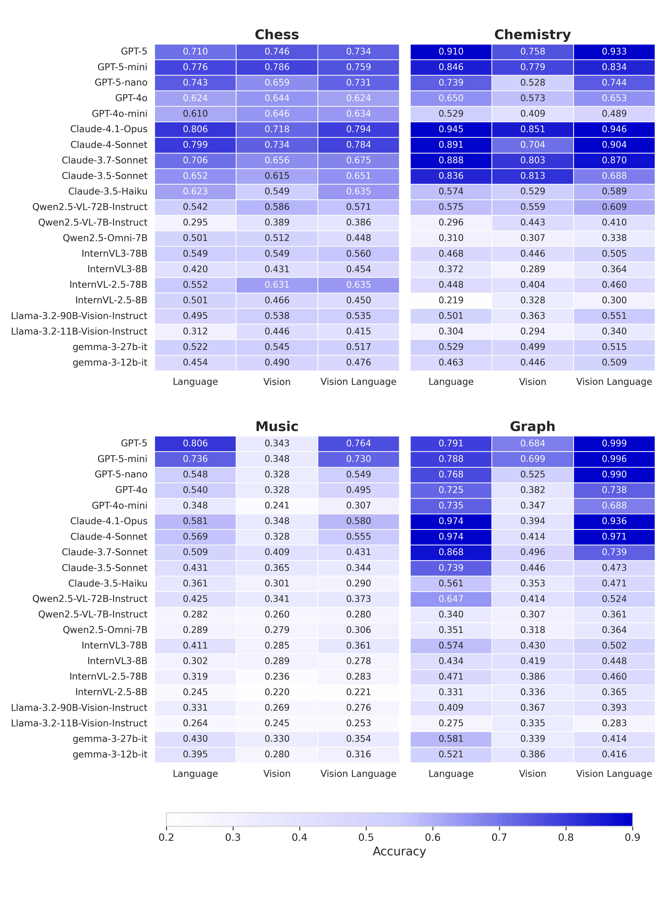

Results

Accuracy vs Agreement: Demonstrating the relationship between model performance and cross-modal consistency across different domains and tasks.

Evaluating whether vision–language models (VLMs) reason consistently across representations is challenging because modality comparisons are typically confounded by task differences and asymmetric information. We introduce SEAM, a benchmark that pairs semantically equivalent inputs across four domains with existing standardized textual and visual notations. By employing distinct notation systems across modalities, in contrast to OCR-based image-text pairing, SEAM provides a rigorous comparative assessment of the textual-symbolic and visual-spatial reasoning capabilities of VLMs. Across 21 contemporary models, we observe systematic modality imbalance: vision frequently lags language in overall performance, despite the problems containing semantically equivalent information, and cross-modal agreement is relatively low. Our error analysis reveals two main drivers: textual perception failures from tokenization in domain notations and visual perception failures that induce hallucinations. We also show that our results are largely robust to visual transformations. SEAM establishes a controlled, semantically equivalent setting for measuring and improving modality-agnostic reasoning.
SEAM addresses fundamental limitations in existing benchmarks through its utilization of distinct notation systems and preservation of semantic equivalence across modalities. By leveraging domain-specific standardized representations in:
SEAM presents both visual-spatial and textual-symbolic representations while maintaining semantic equivalence. The benchmark comprises 16 carefully calibrated tasks designed to be self-contained in both modalities with 3,200 four-way multiple-choice questions in total.
@inproceedings{
tang2025seam,
title={{SEAM}: Semantically Equivalent Across Modalities Benchmark for Vision-Language Models},
author={Zhenwei Tang and Difan Jiao and Blair Yang and Ashton Anderson},
booktitle={Second Conference on Language Modeling},
year={2025},
url={https://openreview.net/forum?id=lI4LgGv4sX}
}